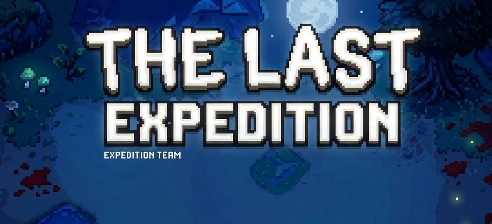
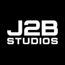
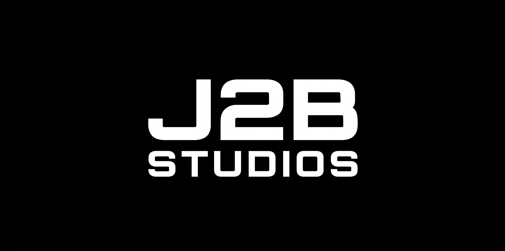

The Last ExpeditionForge · 334 mods

J2B STUDIODescargar ahoraInstala aventuras completas, cambia de modpack y recibe actualizaciones sin mover carpetas ni configurar archivos.

J2B prepara cada instancia con sus mods, configuraciones, recursos y Java. Tú solo eliges qué jugar.
Descarga el pack completo y deja Minecraft preparado en una instancia independiente.
Detecta cada nueva publicación desde GitHub.
Cambia entre modpacks sin mezclar archivos.
Supervivencia, exploración, tecnología y magia en una aventura preparada para entrar y jugar.
Obtén siempre la versión más reciente.
Selecciona una aventura del catálogo.
Todo queda instalado y actualizado.

TU PRÓXIMA AVENTURA EMPIEZA AQUÍBuscando la última versión…